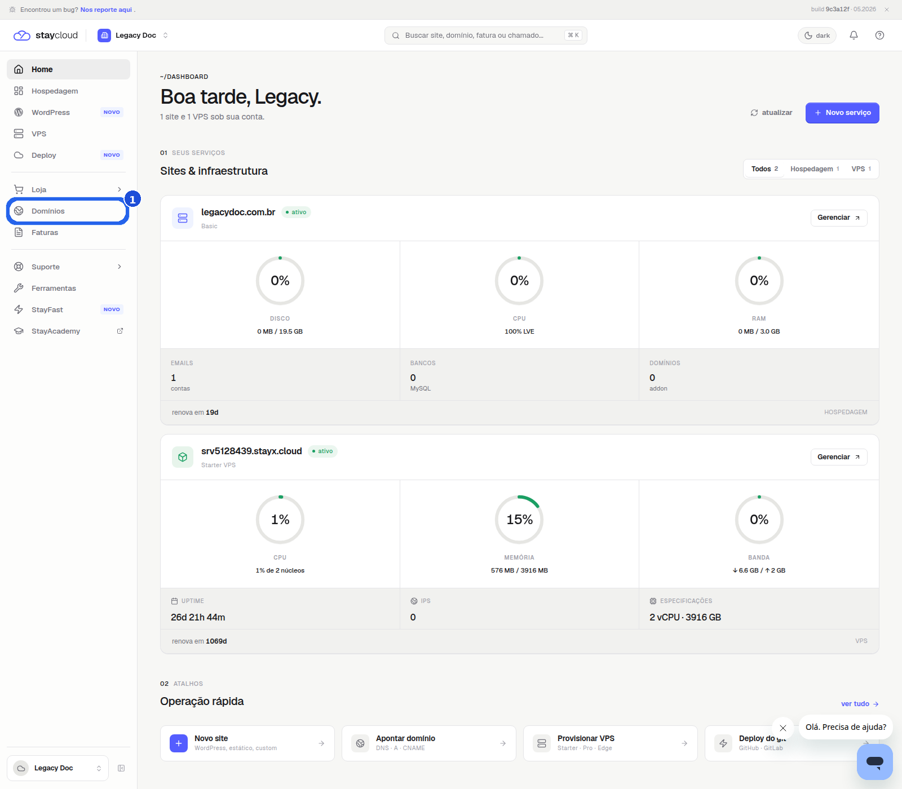
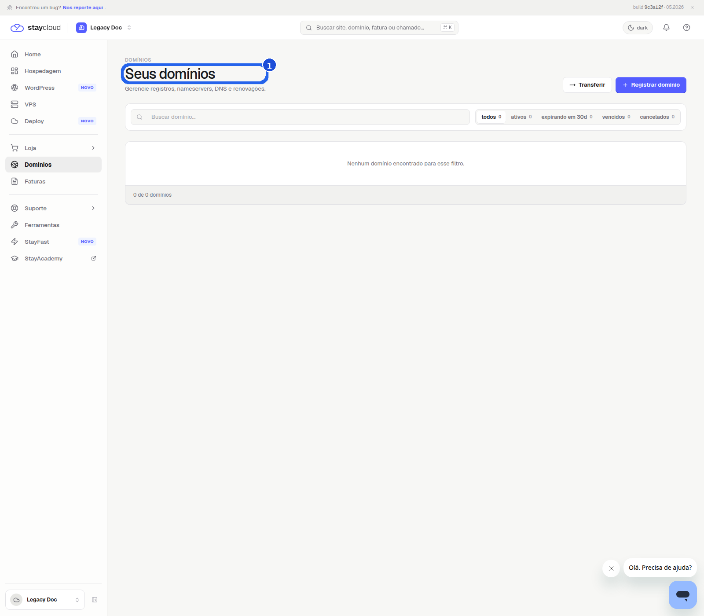
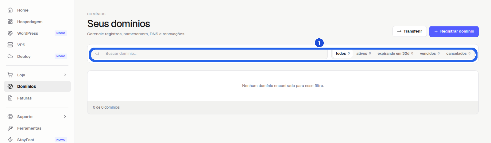
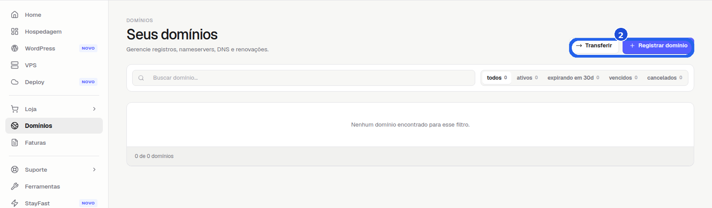

Quando usar este tutorial
Use este passo a passo quando você quiser localizar a área de domínios, ver onde fica a opção de adicionar domínio e conferir a tela correta antes de iniciar qualquer cadastro.
Veja onde localizar a área de domínios no Painel Novo e como parar no ponto certo antes de qualquer alteração na conta.
Use este passo a passo quando você quiser localizar a área de domínios, ver onde fica a opção de adicionar domínio e conferir a tela correta antes de iniciar qualquer cadastro.
Depois do login, você chega à tela inicial do Painel Novo. É nela que a navegação começa.

No menu lateral, clique em Domínios. Na tela seguinte, você deve ver o título Seus domínios.

Na parte superior da área, você vê a busca e os filtros dos domínios. Isso confirma que você chegou na tela certa.

No canto superior direito, encontre Registrar domínio ou a opção equivalente da sua conta.
